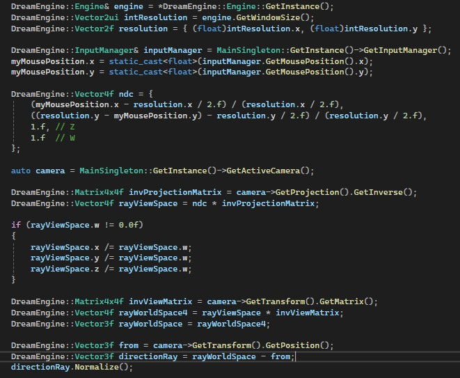
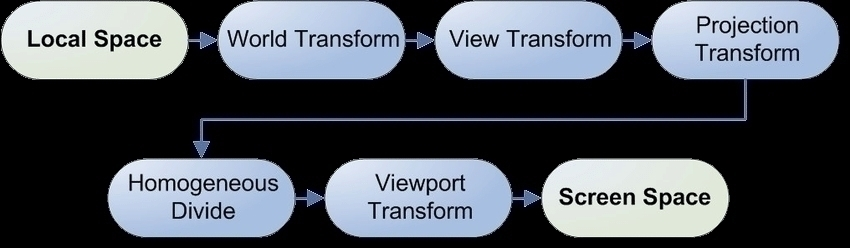
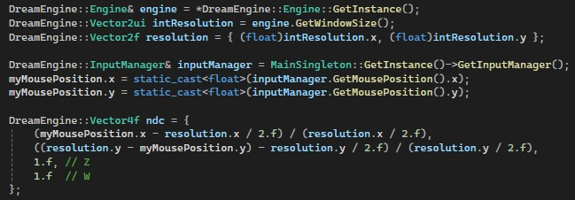
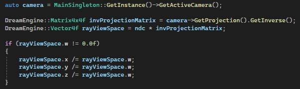

Perspective Projection
Raycasting from Screenspace to World Coordinate in Perspective Camera Projection.
Explanation:

What we need to do is to do the inverse of the standard transformation from local space to screen space. Following these steps in reverse.

Firstly, we need the correct windowsize and mouse position. We convert the mouse position from screen space to Normalized Device Coordinates (NDC):
The x and y values are mapped to the range [-1, 1] where:
* -1 represents the left and bottom of the screen.
* 1 represents the right and top of the screen.
The z-value is set to 1.0f, assuming the ray starts from the far plane in clip space.

We retrieve the active camera to get its projection matrix.
We invert the projection matrix to transform our NDC coordinates into view space.
The multiplication ndc * invProjectionMatrix gives us the ray direction in view space.
Since the transformation uses homogeneous coordinates, we need to divide by the w-component to normalize it.

We retrieve the inverse view matrix from the camera, which allows us to transform the ray from view space to world space.
The resulting rayWorldSpace4 is a 4D vector, but we only need its 3D position (x, y, z), so we store it in rayWorldSpace.
The origin of the ray is the camera's position (from). The direction of the ray is calculated by subtracting the camera position from the transformed world-space position (rayWorldSpace). We normalize the direction vector to ensure it's a unit vector.
Once this is retrieved, we can use this to raycast towards our world.